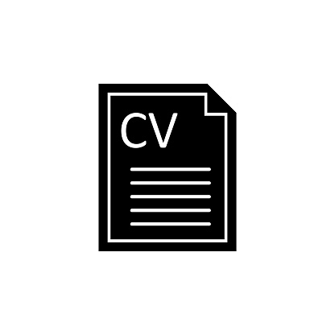

Accéder à mon Curriculum Vitae

Année 2022-2023
Cette année, je suis en première année de BUT Informatique, à l'IUT de Villetaneuse (Université Sorbonne Paris Nord).
Durant cette formation, j'ai suivi des cours de/d':
- Développement Web (html, css, javascript)
- Programmation (Python, Java, C)
- Bases de données (Modèles relationnels, SQL, PL/pgSQL, psql, MariaDB)
- Introduction aux systèmes d'exploitation (Linux)
- Réseaux (table de routage, niveaux de réseaux, fonctionnement des mails SPAM, etc.)
- Architecture réseau (bits, encodage, etc.)
- Économie durable et numérique
- Communication
- Anglais technique et d'entreprise
- Gestion de projet
- Droit des contrats et du numérique
L'organisation de cette formation est similaire à celle du lycée.
L'évaluation en BUT se fait en continu, avec des contrôles sur table, des présentations orales, la participation en cours, et le rendu de projets appelés SAÉ
Pour valider l'année, la présence aux cours est obligatoire.
Pour en savoir plus sur le BUT Informatique, vous pouvez consulter:
J'ai également participé aux ateliers Street Art et Langue des Signes Française, proposés par l'USPN.
Parallèlement à mes études, j'ai poursuivi mon parcours personnalisé au Conservatoire de Villepinte, avec les cours suivants:
- Accordéon
- Groupe d'accordéon et piano
- Auditions et concerts tout au long de l'année
Année 2021-2022
Pendant cette année, j'ai suivi une formation de Parcours des Écoles d'Ingénieurs Polytech (Peip 1 A), à Polytech Sorbonne.
Voici les enseignements que j'y ai reçus:
- Mathématiques
- Mécanique
- Chimie
- Programmation (python, et C)
- Geosciences
- Anglais
L'organisation des enseignements est similaire à celle des licences.
La moitié des cours était donnée en amphithéâtre, sous forme de cours magistraux.
Tandis que la seconde moitié était sous forme de Travaux Pratiques, et de Travaux Dirigés.
J'ai réalisé un stage de découverte du monde professionnel, d'une durée d'un mois, dans l'entreprise de bâtiment Tradibat Cloisons, entre juin et juillet 2022.
Lien vers le site de Polytech Sorbonne: Cliquez ici !
En dehors de cette formation, j'ai poursuivi les cours au Conservatoire de Villepinte,
j'ai suivi des cours de danse HipHop jusqu'en décembre 2021 et de danse GwoKa au Printemps 2022.
Années lycée (2018 - 2021)
Ces années ont été particulièrement bousculées par le confinement dû à la pandémie de Coronavirus.
Terminale
Mes enseignements de spécialité de Terminale Générale sont les Mathématiques, et la Physique-Chimie, accompagnés de l'option Mathématiques expertes.
Mes 2 sujets de Grand Oral:
- Quels procédés chimiques sont utilisés dans la cuisine moléculaire ?
- Quels liens peut-on établire entre les sciences dures et la musique ?
Première
Mes enseignements de spécialité de Première Générale sont les Mathématiques, la Physique-Chimie, et l'Histoire des Arts.
Cette dernière m'a permis de participer à de nombreuses sorties culturelles, et un projet, avant le confinement.
Il s'agit également de l'année où j'ai commencé à prendre des cours de danse HipHop (Tinoschool).